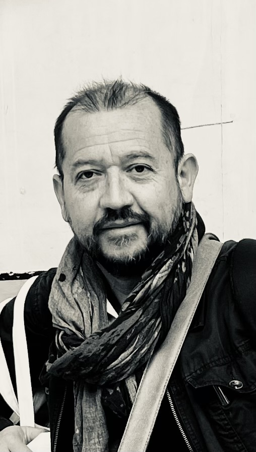

About

Full Professor at Université de Rennes
I am a Full Professor at the Signal and Image Processing Laboratory (LTSI-INSERM 1099), University of Rennes, France. My current research activities focus on image processing and computational methods for devising innovative and personalized radiotherapy in cancer care. This research work is being developed in tight collaboration with clinicians and medical physicists at the Anti-Cancer Center, Eugène Marquis.
My expertise includes predictive models for radiotherapy, with a focus on introducing innovative methodologies for 3D data mining and digital twins. Throughout my career, I have established a strong track record in medical image processing and computational analysis, contributing to both fundamental research and clinical applications in cancer treatment planning and outcome prediction.
General Chair, ISBI 2023 - the IEEE International Symposium on Biomedical Imaging held in Cartagena, Colombia. The first ISBI held in Latin America.
Professional Experience
- Full Professor, LTSI-INSERM 1099, Université de Rennes, France (Sep 2025 - Present)
- Associate Professor, LTSI-INSERM 1099, Université de Rennes, France (Nov 2009 - Aug 2025)
- Head of Master Program in Electronics and Automatics Engineering, Université de Rennes (2017 - 2021)
- Research Scientist, CSIRO, Australia (Nov 2005 - Nov 2009)
- Member, INSERM Scientific Specialized Commission CSS8 - Technologies for Health (2012 - 2016)
Education
- HDR (Accreditation to Direct Research), Université de Rennes, France (2021)
- PhD in Biomedical Image Processing, Université de Rennes, France (2004)
- M.S. in Biomedical Engineering, Universidad de los Andes, Bogotá, Colombia (1997)
- B.S. in Electrical Engineering, Universidad de los Andes, Bogotá, Colombia (1995)